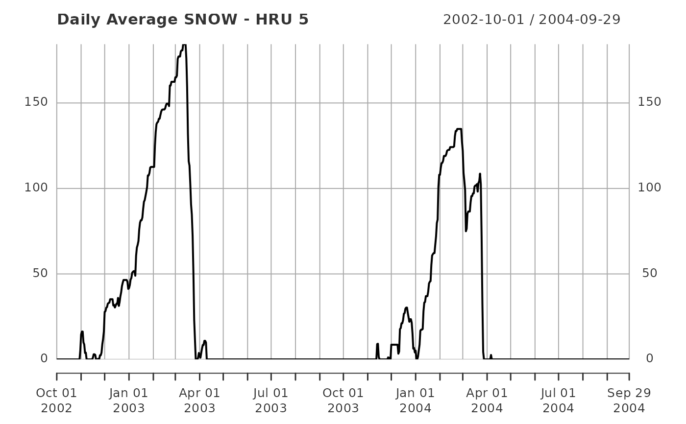

rvn_custom_read is used to read any Raven custom output file
rvn_custom_read(ff = NA, no_runname = FALSE, tzone = "UTC")full file path to the custom output file
boolean for whether a runName is supplied, important for parsing the filename
string indicating the timezone of the data in ff
data frame with the custom output data stored as xts object
rvn_custom_read parses the filename and predicts the file format accordingly, so it is important to use the unmodified file names for this function. The use (or not) of a runname is accounted for.
The returned object is a time series object (xts format), which can be used to easily plot the time series data. The otpions of the custom output are included in the rav.obj attributes.
The timezone is provided by the tzone argument as "UTC" by default, and should be adjusted by the user to the local time zone as needed, based on the model run.
rvn_custom_output_plot for plotting custom output
# find sample rvh file for Nith subwatershed
ff <- system.file("extdata","run1_SNOW_Daily_Average_ByHRU.csv", package="RavenR")
# extract and plot custom data
mycustomdata <- rvn_custom_read(ff)
summary(mycustomdata[,1:5])
#> Index 1 2
#> Min. :2002-10-01 00:00:00 Min. : 0.00 Min. : 0.00
#> 1st Qu.:2003-04-01 06:00:00 1st Qu.: 0.00 1st Qu.: 0.00
#> Median :2003-09-30 12:00:00 Median : 0.00 Median : 0.00
#> Mean :2003-09-30 12:00:00 Mean : 26.48 Mean : 26.47
#> 3rd Qu.:2004-03-30 18:00:00 3rd Qu.: 31.43 3rd Qu.: 31.42
#> Max. :2004-09-29 00:00:00 Max. :184.38 Max. :184.37
#> 3 4 5
#> Min. : 0.00 Min. : 0.00 Min. : 0.00
#> 1st Qu.: 0.00 1st Qu.: 0.00 1st Qu.: 0.00
#> Median : 0.00 Median : 0.00 Median : 0.00
#> Mean : 36.16 Mean : 26.49 Mean : 26.48
#> 3rd Qu.: 54.83 3rd Qu.: 31.44 3rd Qu.: 31.43
#> Max. :196.40 Max. :184.42 Max. :184.39
plot(mycustomdata[,5],main='Daily Average SNOW - HRU 5')
